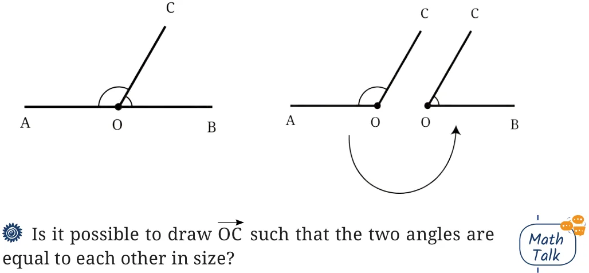
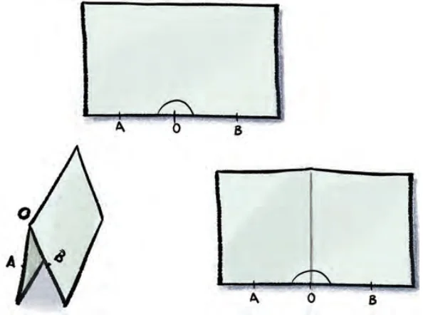
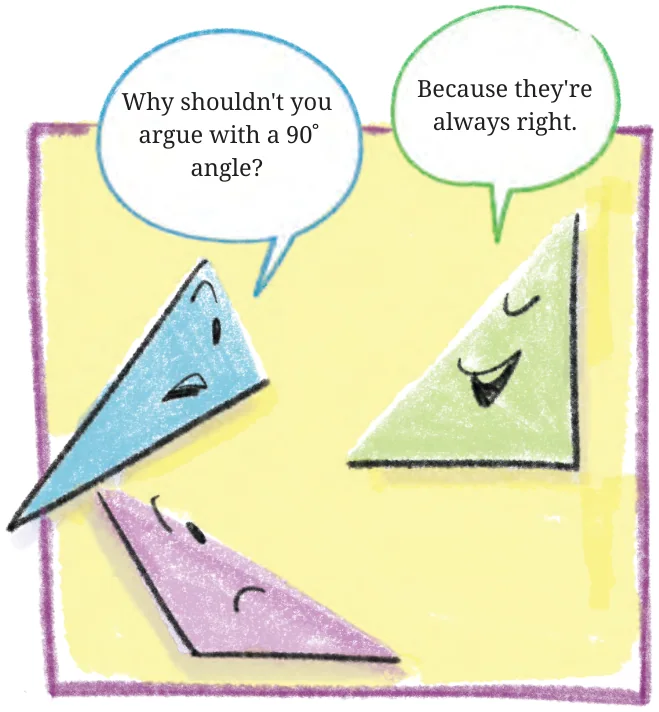

<!DOCTYPE html>
<html lang="en">
<head>
<meta charset="UTF-8">
<meta name="viewport" content="width=device-width,initial-scale=1">
<title>2.8 Special Types of Angles — Lines and Angles</title>
<meta name="description" content="Class 6 Mathematics · Lines and Angles · 2.8 Special Types of Angles">
<link rel="icon" href="data:image/svg+xml,<svg xmlns='http://www.w3.org/2000/svg' viewBox='0 0 100 100'><text y='.9em' font-size='90'>📘</text></svg>">
<link rel="stylesheet" href="../../../assets/book.css">
<link rel="stylesheet" href="https://cdn.jsdelivr.net/npm/katex@0.16.11/dist/katex.min.css" crossorigin="anonymous">
</head>
<body>
<header class="topbar">
<div class="topbar-in">
  <div class="crumb">
    <span class="c1"><a href="../../../index.html">Library</a> · <a href="../../index.html">Class 6 Mathematics</a></span>
    <span class="c2">Lines and Angles · 2.8 Special Types of Angles</span>
  </div>
  <a class="tb-btn" data-nav="prev" href="../../02-lines-and-angles/10-making-rotating-arms-2.7/index.html" title="2.7 Making Rotating Arms">←</a>
  <details class="drawer"><summary class="tb-btn" title="Sections in this chapter">☰</summary>
<div class="drawer-panel"><div class="dh">Lines and Angles</div><a href="../01-chapter-opener/index.html">Chapter opener; 2.1 Point</a><a href="../02-line-segment-2.2/index.html">2.2 Line Segment</a><a href="../03-line-2.3/index.html">2.3 Line</a><a href="../04-ray-2.4/index.html">2.4 Ray</a><a href="../05-figure-it-out/index.html">Figure it Out</a><a href="../06-angle-d-2.5/index.html">2.5 Angle D</a><a href="../07-figure-it-out/index.html">Figure it Out</a><a href="../08-comparing-angles-2.6/index.html">2.6 Comparing Angles</a><a href="../09-figure-it-out/index.html">Figure it Out</a><a href="../10-making-rotating-arms-2.7/index.html">2.7 Making Rotating Arms</a><a href="../11-special-types-of-angles-2.8/index.html" aria-current="page">2.8 Special Types of Angles</a><a href="../12-figure-it-out/index.html">Figure it Out</a><a href="../13-figure-it-out/index.html">Figure it Out</a><a href="../14-measuring-angles-2.9/index.html">2.9 Measuring Angles</a><a href="../15-degree-measures-of-different-angles/index.html">Degree measures of different angles</a><a href="../16-unlabelled-protractor/index.html">Unlabelled protractor</a><a href="../17-figure-it-out/index.html">Figure it Out</a><a href="../18-labelled-protractor/index.html">Labelled protractor</a><a href="../19-figure-it-out/index.html">Figure it Out</a><a href="../20-figure-it-out/index.html">Figure it Out</a><a href="../21-drawing-angles-2.10/index.html">2.10 Drawing Angles</a><a href="../22-figure-it-out/index.html">Figure it Out</a><a href="../23-types-of-angles-and-their-measures-2.11/index.html">2.11 Types of Angles and their Measures</a><a href="../24-figure-it-out/index.html">Figure it Out</a><a href="../25-figure-it-out/index.html">Figure it Out</a><a href="../26-summary/index.html">Summary</a><a href="../27-solutions/index.html">CHAPTER 2 — SOLUTIONS</a></div></details>
  <a class="tb-btn" data-nav="next" href="../../02-lines-and-angles/12-figure-it-out/index.html" title="Figure it Out">→</a>
  <button class="tb-btn" data-theme-toggle title="Toggle light / dark" aria-label="Toggle light or dark theme">◐</button>
</div>
<div class="progress"><span style="width:12.9%"></span></div>
</header>
<main class="wrap">
<div class="sec-head">
  <p class="eyebrow"><a href="../index.html">Chapter 2 · Lines and Angles</a></p>
  <h1>2.8 Special Types of Angles</h1>
  <p class="sec-meta">Textbook pages 15–17 · 4 figures</p>
</div>
<article class="prose">
<p>Let us go back to Vidya’s notebook and observe her opening the cover of the book in different scenarios. She makes a full turn of the cover when she has to write while holding the book in her hand. She makes a half turn of the cover when she has to open it on her table. In this case, observe the arms of the angle formed. They lie in a straight line. Such an angle is called a straight angle.</p>
<p>A O B Fig. 2.11</p>
<p>Let us consider a straight angle \(\angle AOB\). Observe that any ray OC divides it into two angles, \(\angle AOC\) and \(\angle COB\).</p>
<figure class="fig wide"></figure>
<p>Let’s Explore</p>
<p>We can try to solve this problem using a piece of paper. Recall that when a fold is made, it creates a crease which is straight. Take a rectangular piece of paper and on one of its sides, mark the straight angle AOB. By folding, try to get a line (crease) passing through O that divides \(\angle AOB\) into two equal angles. How can it be done?</p>
<figure class="fig"></figure>
<p>Fold the paper such that OB overlaps with OA. Observe the crease and the two angles formed.</p>
<p>Justify why the two angles are equal. Is there a way to superimpose and check? Can this superimposition be done by folding? Each of these equal angles formed are called right angles. So, a straight angle contains two right angles.</p>
<figure class="fig"></figure>
<p>If a straight angle is formed by half of a full turn, how much of a full turn will form a right angle?  Observe that a right angle resembles the shape of an ‘L’. An angle is a right angle only if it is exactly half of a straight angle. Two lines that meet at right angles are called perpendicular lines.</p>
</article>
<nav class="pager"><a class="" data-nav="prev" href="../../02-lines-and-angles/10-making-rotating-arms-2.7/index.html"><span class="dir">← Previous</span><span class="t">2.7 Making Rotating Arms</span><span class="ch">Lines and Angles</span></a><a class="nx" data-nav="next" href="../../02-lines-and-angles/12-figure-it-out/index.html"><span class="dir">Next →</span><span class="t">Figure it Out</span><span class="ch">Lines and Angles</span></a></nav>
</main><footer class="site">Generated from the source textbook PDFs · text, figures and exercises belong to their respective publishers.</footer><script defer src="https://cdn.jsdelivr.net/npm/katex@0.16.11/dist/katex.min.js" crossorigin="anonymous"></script>
<script defer src="https://cdn.jsdelivr.net/npm/katex@0.16.11/dist/contrib/auto-render.min.js" crossorigin="anonymous"
  onload="renderMathInElement(document.body,{delimiters:[
    {left:'\\(',right:'\\)',display:false},
    {left:'$$',right:'$$',display:true},
    {left:'\\[',right:'\\]',display:true}],throwOnError:false,ignoredTags:['script','noscript','style','textarea','pre','code']})"></script>
<script src="../../../assets/book.js"></script>
<script defer src="../../../../assets/search.js?v=1789782771"></script>
<script defer src="../../../../assets/screenshot.js?v=2"></script>
</body>
</html>
